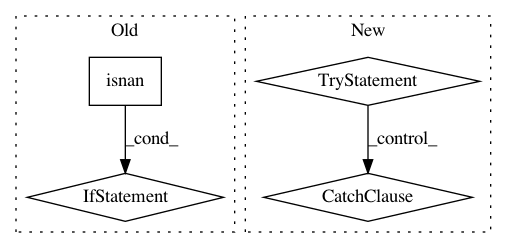

bef7dd92cbdd2c81a7d89786b9a76b011f1bc086,maml_rl/baseline.py,LinearFeatureBaseline,fit,#LinearFeatureBaseline#Any#,29
Before Change
torch.matmul(featmat.t(), returns),
torch.matmul(featmat.t(), featmat) + reg_coeff * eye
)
if not isnan(self.linear.weight).any():
break
reg_coeff *= 10
self.linear.weight.data = coeffs.data.t()
def forward(self, episodes):
After Change
eye = torch.eye(self.feature_size, dtype=torch.float32,
device=self.linear.weight.device)
for _ in range(5):
try:
coeffs, _ = torch.gels(
torch.matmul(featmat.t(), returns),
torch.matmul(featmat.t(), featmat) + reg_coeff * eye
)
break
except RuntimeError:
reg_coeff += 10
else:
raise RuntimeError("Unable to solve the normal equations in "
"`LinearFeatureBaseline`. The matrix X^T*X (with X the design "
"matrix) is not full-rank, regardless of the regularization "
In pattern: SUPERPATTERN
Frequency: 3
Non-data size: 4
Instances
Project Name: tristandeleu/pytorch-maml-rl
Commit Name: bef7dd92cbdd2c81a7d89786b9a76b011f1bc086
Time: 2018-06-19
Author: tristan.deleu@gmail.com
File Name: maml_rl/baseline.py
Class Name: LinearFeatureBaseline
Method Name: fit
Project Name: matplotlib/matplotlib
Commit Name: d23bcea94a01a598de9619a1bf45b911120f7096
Time: 2019-01-08
Author: jklymak@gmail.com
File Name: lib/matplotlib/axis.py
Class Name: Axis
Method Name: _update_ticks
Project Name: nilearn/nilearn
Commit Name: fe3ff1fe75e33ff03f0d07aea09419a2f910cb3a
Time: 2016-02-01
Author: abraham.alexandre@gmail.com
File Name: nilearn/_utils/numpy_conversions.py
Class Name:
Method Name: csv_to_array